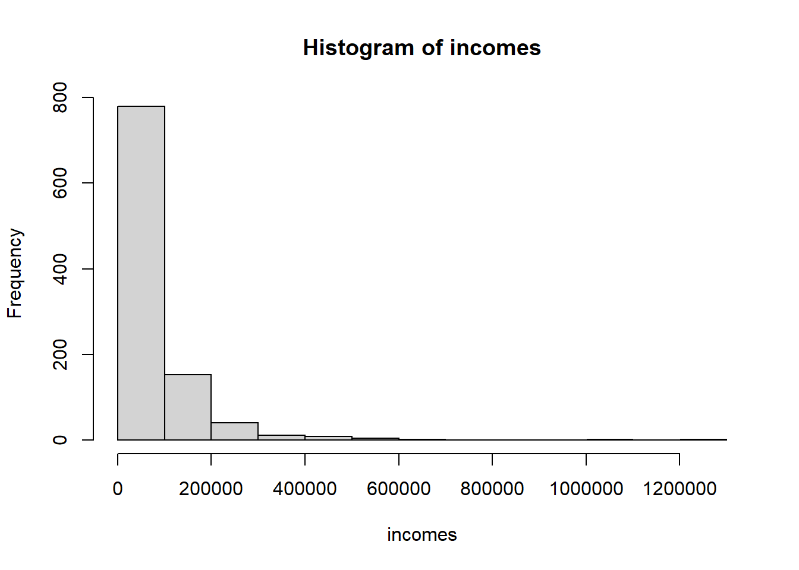

Bootstrap (homework)
So You Think You Can Do Statistics
# THIS DOCUMENT INCLUDES THE SOLUTION
# regenerate with soln: FALSE to create the
# HW assignment for the students
# The point of this HW is to give the students practice
# creating bootstrap confidence intervals and to
# provide an example where using the mean (and tdist based CI)
# probably doesn't make much sense.
# Here we simulate some data for use in the HW
# you will need to make this accessible to the students for
# this hw
set.seed(87)
incomes <- exp(rnorm(1000,10.75,1.02))
incomesB <- exp(rnorm(1000,10.75,0.85))
incomesSmall <- sample(incomes,100)
# create an function gini to calculate the gini index
gini <- function(x){
n <- length(x)
mu <- mean(x)
2/(n*(n-1)*mu)*sum((1:n)*sort(x))-(n+1)/(n-1)
}
# save everything in an R object called incomes.Rdat
save(incomes,incomesB,incomesSmall,gini,file="incomes.Rdat")
# students can access this copying the file to somewhere
# they have access to and then typing load(file.choose())
# Or if they put it in their working directory they can
# use load("incomes.Rdat")
#remove the objects from the session.
rm(list=c("incomes","incomesB","incomesSmall","gini"))Introduction
In this homework you will be analyze income data using the bootstrap. In many cases we describe populations using the mean. For example, the mean monthly GB of data used in cell phone plans, or the mean length of hospital stays. As Peter showed in class, the central limit theorem allows us to easily construct approximate confidence intervals for the mean, \(\bar{x} \pm 1.96se\). But what do you do when you want to calculate a confidence interval for a metric that is not the mean? Below you will use the bootstrap to calculate confidence intervals for metrics commonly used when describing income distributions.
Download incomes.Rdat from the files section of the class site and move it into you R working directory. You can figure out what your R working directory is by typing getwd() and hitting return. Or you can change your working directory using the menu option
session/change working directoryin Rstudio. Once you have the file, load the income data into the R session using theloadfunction.load("incomes.Rdat")You will now have the variables,
incomes,incomesB, andincomesSmall, as well as a function calledginiin your R session. The variablesincomes,incomesB, andincomesSmallare random samples from all incomes in a country. There are 1000 values inincomesandincomesBwhileincomesSmallhas 100 values. Plot a histogram of theincomesdata (notincomesBorincomesSmall) and calculate some basic statistics (like the mean). What do you notice about the data?
Solution
hist(incomes)
mean(incomes)## [1] 74106.03median(incomes)## [1] 45403.63sd(incomes)## [1] 94039.74The income distribution is not symmetric. It is skewed, with a long tail to the right. Also, notice that the median is much smaller than the mean. For a symetric distribution we would expect them to be similar. The median is the value for which 50% of the observations are above and 50% below.
Income inequality is a topic that has recently received a lot of attention. One way to summarize the degree of income inequality is to calculate the proportion of total income that goes to the top 5% of earners (let's refer to this as the top5 metric). There are different ways that you could calculate this metric in R. One way is to a) figure out what income level separates the lower 95% from the top 5% of earners, b) sum the incomes above this level and then c) divide this sum by the sum of all incomes. For step a we can use the
quantilefunction in R.quantile(incomes,prob=0.95)To sum the incomes above a certain level (here we use x as a place holder) we can use:
sum(incomes[incomes>x])Calculate the proportion of the total income that goes to the top 5% of earners for sample
incomes. What would you expect if everyone earned about the same income?
Solution
Q95 <- quantile(incomes,prob=0.95) sum(incomes[incomes>Q95])/sum(incomes)## [1] 0.2521954So 25% of the total income goes to the top 5% of earners. If all incomes were about the same I would expect to get 5% instead.
- Since
incomesis a sample from a population, we would like to describe the uncertainty in this estimate. Use the bootstrap to calculate a 95% confidence interval for the top5 metric (calculated in question 2, i.e. % of total income going to the top 5% of earners) and plot the histogram of the bootstrap distribution (again for theincomesdata). Use 10,000 resamples in your bootstrap code. Notice: thesizeparameter in thesamplefunction should be1000(the size of the sample, incomes). If you don't include thesizeparameter it defaults to the size of vector you are sampling from (so in this case, 1000).
Solution
bsVals <- numeric(10000) incomeDat <- incomes for(i in 1:10000){ incomeSamp <- sample(incomeDat,replace=TRUE) top5break <- quantile(incomeSamp,prob=0.95) bsVals[i] <- sum(incomeSamp[incomeSamp>top5break])/sum(incomeSamp) } bsCI <- quantile(bsVals,prob=c(0.025,0.975)) hist(bsVals,xlab="Proportion of total income that goes to the richest 5%",main="",col="gray") top5break <- quantile(incomeDat,prob=0.95) pp <- sum(incomeDat[incomeDat>top5break])/sum(incomeDat) abline(v=pp,lwd=2) abline(v=bsCI[1],lty=3) abline(v=bsCI[2],lty=3)The 95% confidence interval is (0.219-0.283) .
the incomesB variable contains a sample of incomes from another country. Calculate the 95% confidence interval for this population (using the same top5 metric as in problems 2 and 3). Do the confidence intervals overlap? Even if the confidence intervals do overlap, there could still be a statistically significant difference between the two metrics. Calculate the confidence interval for the difference in the metrics for the two populations. This can be accomplished using code very similar to what you have already used. Look at the solution to question 2 in the lab for an example of creating a bootstrap confidence interval for a difference between means (although here we are not using means). It should look something like this:
for(i in 1:10000){ # draw a sample from each population and calculate the two metrics bsVals[i] <- valueForCountryA - valueForCountryB }Is there a statistically significant difference?
Solution
bsVals <- numeric(10000) incomeDat <- incomesB for(i in 1:10000){ incomeSamp <- sample(incomeDat,replace=TRUE) top5break <- quantile(incomeSamp,prob=0.95) bsVals[i] <- sum(incomeSamp[incomeSamp>top5break])/sum(incomeSamp) } bsCIB <- quantile(bsVals,prob=c(0.025,0.975)) # plot the results hist(bsVals,xlab="Proportion of total income that goes to the richest 5%",main="",col="gray") top5break <- quantile(incomeDat,prob=0.95) pp <- sum(incomeDat[incomeDat>top5break])/sum(incomeDat) abline(v=pp,lwd=2) abline(v=bsCIB[1],lty=3) abline(v=bsCIB[2],lty=3)
The 95% confidence interval is (0.184-0.227). So, there is a slight overlap with the confidence interval for population A.
bsVals <- numeric(10000) incomeDat <- incomesB for(i in 1:10000){ incomeSampA <- sample(incomes,replace=TRUE) top5breakA <- quantile(incomeSampA,prob=0.95) valA <- sum(incomeSampA[incomeSampA>top5breakA])/sum(incomeSampA) incomeSampB <- sample(incomesB,replace=TRUE) top5breakB <- quantile(incomeSampB,prob=0.95) valB <- sum(incomeSampB[incomeSampB>top5breakB])/sum(incomeSampB) bsVals[i] <- valA - valB } bsCI <- quantile(bsVals,prob=c(0.025,0.975)) hist(bsVals,xlab="Proportion of total income that goes to the richest 5%",main="",col="gray") top5breakA <- quantile(incomes,prob=0.95) ppA <- sum(incomes[incomes>top5breakA])/sum(incomes) top5breakB <- quantile(incomesB,prob=0.95) ppB <- sum(incomesB[incomesB>top5breakB])/sum(incomesB) abline(v=ppA-ppB,lwd=2) abline(v=bsCI[1],lty=3) abline(v=bsCI[2],lty=3)
The confidence interval for the difference (0.008-0.084) does not include 0 so there is a statistically significant difference (barely!).


- The Gini coefficient is another way of measuring income inequality. Calculate a 90% CI for the difference in the gini coefficient for the two populations. Notice that the statement
gini(incomes)will calculate the gini index for theincomesdata.
Solution
bsVals <- numeric(10000) incomeDat <- incomesB for(i in 1:10000){ incomeSampA <- sample(incomes,replace=TRUE) incomeSampB <- sample(incomesB,replace=TRUE) bsVals[i] <- gini(incomeSampA)-gini(incomeSampB) } bsCI <- quantile(bsVals,prob=c(0.025,0.975)) hist(bsVals,xlab="Gini Coefficient",main="",col="gray") pp <- gini(incomes)-gini(incomesB) abline(v=pp,lwd=2) abline(v=bsCI[1],lty=3) abline(v=bsCI[2],lty=3)
Extra for experts.
The Lorenz curve shows the metric calculated in problem 2, but for all percentages (i.e. not just 5%). We can plot the curve for the much smaller sample of incomes,
incomesSmall, data using the code:xx <- 100*cumsum(sort(incomesSmall))/sum(incomesSmall) plot(100*(1:length(xx))/length(xx),xx,xlab="Cummulative percent of earners from lowest to highest incomes",ylab="Cummulative percent of income earned",type="l",xaxs="i",yaxs="i") abline(0,1,lty=3)Generate 20 or so bootstrap samples from
incomesSmalland draw their Lorenz curves over the top of the plot above. For which x values does the uncertainty in the % income earned tend to be the highest (hint: draw a few vertical lines).
Solution
xx <- 100*cumsum(sort(incomesSmall))/sum(incomesSmall) plot(100*(1:length(xx))/length(xx),xx,xlab="Cummulative percent of earners from lowest to highest incomes",ylab="Cummulative percent of income earned",type="l",xaxs="i",yaxs="i") abline(0,1,lty=3) for(i in 1:25){ samp <- sample(incomesSmall,replace=TRUE) xx <- 100*cumsum(sort(samp))/sum(samp) lines(100*(1:length(xx))/length(xx),xx,col=rgb(0,0,0,0.2)) }There's more uncertainty for moderate and higher values of Cummulative percent of earners.